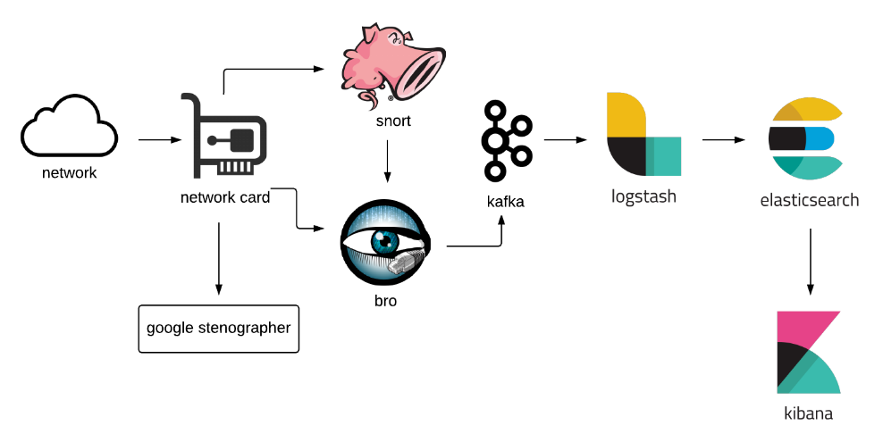

ROCK
Response Operations Collection Kit
rocknsm.io
Kevin Keeney
About Me
The worst part about telling a UDP joke is you can't tell if anyone got it.
MOCYBER
(Missouri National Guard Cyber Team)

CAPES
- Cyber Analytic Platform and Extraction Sensor
But what does it all mean, Basil?
ROCK

Architecture
- PF_RING
- Bro
- Snort
- Stenographer
- Kafka
- Logstash
- Elasticsearch
- Kibana
PF_RING
Bro
Just a broverview
Snort
Stenographer
Kafka
Logstash
Elasticsearch
Kibana
(Bare) Minimum Hardware
- 8GB of RAM
- 2 CPU Cores
- Disk (Space and IOPS)
But does it scale?
Scale out Elasticsearch
Partition Kafka topic & increase logstash workers
Roadmap
How do I get started?